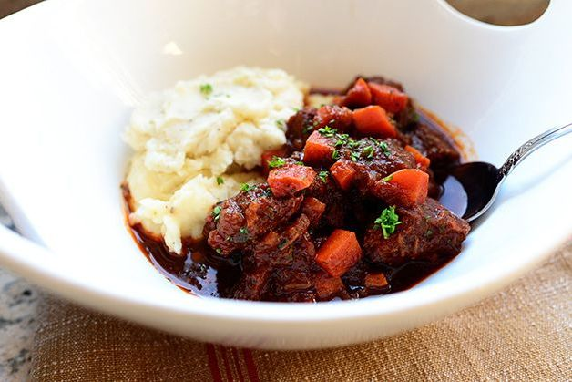

Beef & Guiness Stew

Description
- Cooking Time:about 2,5 hours
- Servings: 4
Something to cook for a St Patrick's Day. Or any other day.
Ingredients
- 4 strips bacon, sliced into small pieces
- 2,5 pounds beef chuck, cut in 2-inch pieces (tossed with black pepper and at least 1 teaspoon salt)
- 2 onions, chopped
- 1/2 teaspoon salt
- 4 cloves garlic, minced
- 1 can Guinness beer
, or other dark beer
- 1/4 cup tomato paste
- 4 sprigs of fresh thyme
- 3 carrots, cut in 1-inch pieces
- 2 ribs celery, cut in 1-inch pieces
- 2,5 cups chicken stock, or as needed
- 1 teaspoon sugar
- salt and freshly ground black pepper to taste
- 4 cups mashed potatoes
, optional
Directions
Step 1
- Cook and stir bacon in a heavy skillet over medium-high heat until bacon is browned and crisp, 3 to 4 minutes.
- Turn off heat and transfer bacon into a large stew pot, reserving bacon fat in the skillet.
Step 2
- Season beef chuck cubes generously with 1 teaspoon salt and black pepper to taste.
- Turn heat to high under skillet and sear beef piece in the hot fat on both sides until browned, 5 minutes.
- Place beef in stew pot with bacon, leaving fat in skillet.
- Turn heat down to medium.
- Cook and stir onions in the retained fat in the skillet until lightly browned, 5 to 8 minutes.
- Season with a large pinch of salt.
Step 3
- Cook garlic with onions until soft, about 1 minute.
- Pour beer into skillet and stir with a wooden spoon, scraping up and dissolving any browned bits of food into the liquid.
- Pour cooking liquid from skillet into the stew pot.
- Stir in tomato paste, thyme sprigs, carrots, celery, sugar, 1/2 teaspoon black pepper, and enough chicken broth to cover.
Step 4
- Bring stew to a gentle simmer, stirring to combine.
- Reduce heat to low and cover pot.
- Simmer stew until beef is fork-tender, about 2 hours.
- Stir stew occasionally.
Step 5
- Remove cover and raise heat to medium-high.
- Bring stew to a low boil and cook until stew has slightly thickened, 15 to 20 minutes.
- Remove and discard thyme sprigs and adjust salt and pepper to taste.
Step 6
- Arrange mashed potatoes in a ring in a serving bowl.
- Ladle stew into the center of the potatoes.
Link to original recipe
Back to Homepage